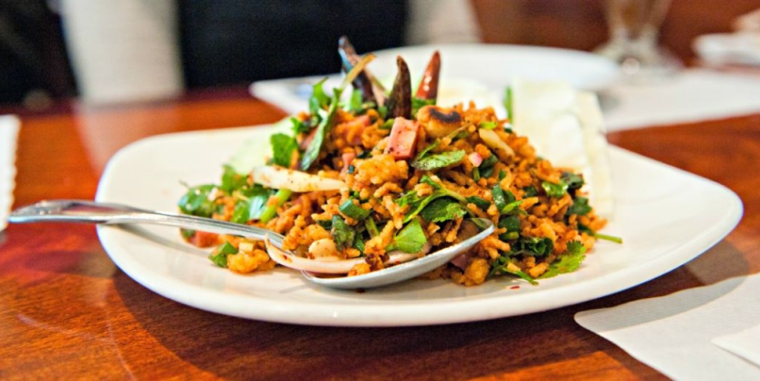
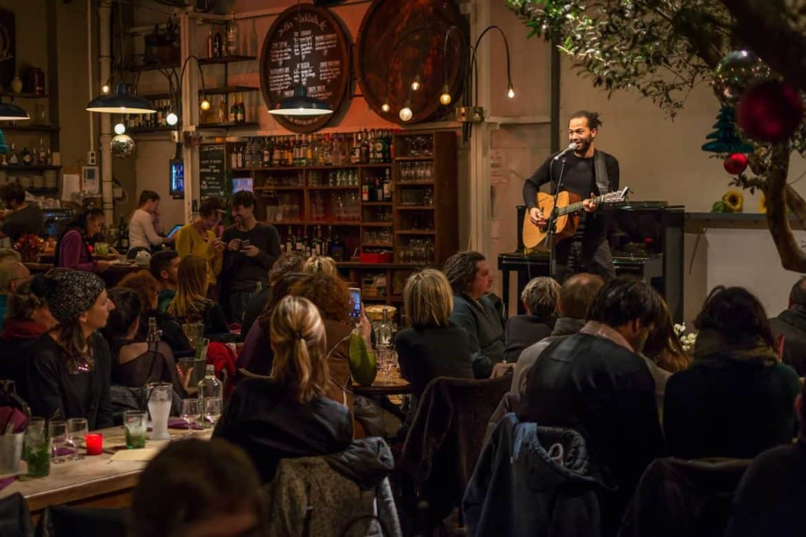

Chez Joy ...C'est comme à la maison !
Des produits frais de saison ... De la cuisine potagère faite maison préparée aux petits oignons
L'écologie est notre priorité ...
Nous utilisons des matériaux recyclés pour nos plats à emporter et pour l'ensemble de la salle
Nous
avons aussi choisi de recycler l'eau pour une planète plus nette
Notre terre est précieuse, nous cuisinons également en limitant les déchets
Parce que nous voulons partager le bon manger mais aussi notre joy de vivre
Venez assister à nos évènements * (concerts, expositions artistiques, soirées à thèmes)
Nos partenaires sont choisis avec amour pour le plaisir de partager leur passion
Venez visiter leurs sites avec le sourire
Nos agriculteurs
 Dutronc Jules
Dutronc Jules
lien vers le site
 Menier Marie
Menier Marie
lien vers le site
Nos éleveurs
élevage porcin
lien vers le site
 Darneau Julien
Darneau Julien
Aquaculture
lien vers le site
 Garcia Magali
Garcia Magali
élevage bovin
lien vers le site
 Thude Roger
Thude Roger
aviculture
lien vers le site
 Martin Paul
Martin Paul
élevage ovin
lien vers le site
*Voir conditions au restaurant